Annotations
MapStore lets you enrich the map with special features which expose additional information, mark particular position on the map and so on. Those features make up the so-called Annotations layers.
Within the map viewer, the editor can access the Annotations tool button from the TOC panel on the top-left corner of the map viewer.
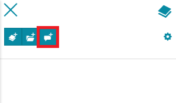
The annotation panel will open and the editor can insert a Title (required) and a Description (optional).
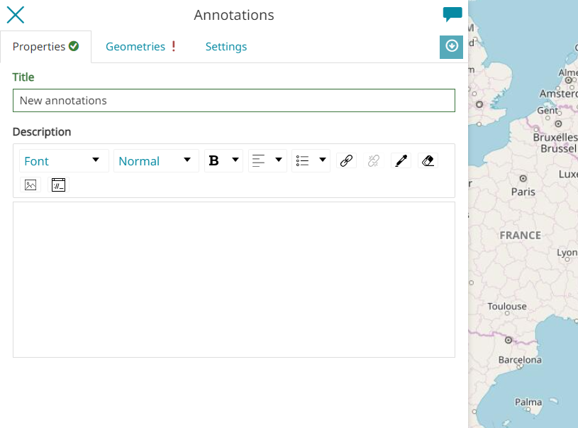
From the Geometries tab, the editor can choose between five different types of Geometries:
- Marker 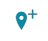
- Line 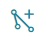
- Polygon 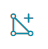
- Text 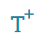
- Circle 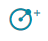
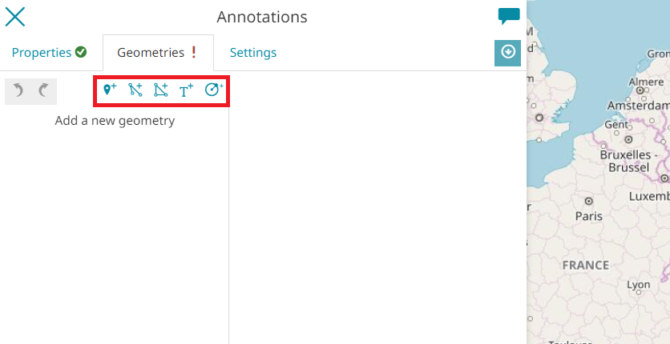
After selecting a geometry type, the editor can:
- Draw a Geometry on the map.
- Enter the vertices of the geometry or modify the existing ones through the Coordinates editor using
DecimalorAeronauticalformats.
- For Line and Polygon, add new vertices using the button and typing the
latitudeandlongitudevalues.
Note
If the vertices are invalid, they are notified with a red exclamation point and the geometry field is outlined in red. 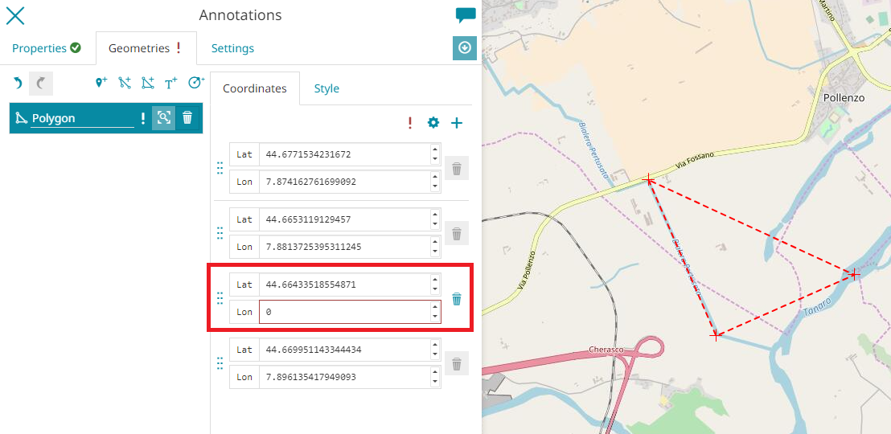 In this case, it is not possible to save the annotation, as follows:
- Customize the Style of the annotation, as explained in the following paragraph.
For each geometry created, the editor can perform the following operations:
-
Zoom to the annotation geometry on map through the button
-
Delete the geometry annotation through the button
Once all the geometries are created, the user can go back to the TOC by clicking the button. A new annotation layer will appear here.
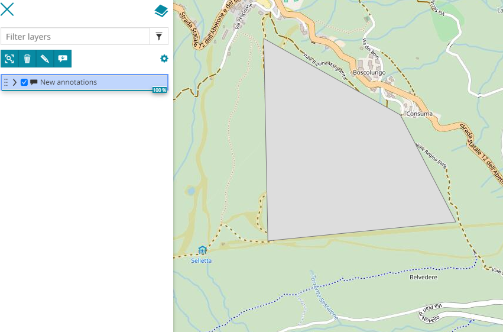
From the TOC, the Annotations toolbar allows the user to:
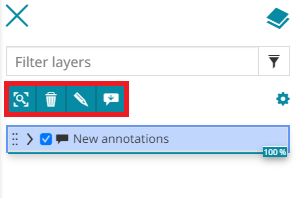
-
Zoom to annotation extent through the button
-
Delete the annotation through the button
-
Edit the annotation through the
 button
button -
Download the annotation through the button
Styling Annotations
Based on which type of annotation is chosen, MapStore allows to customize the annotation style through a powerful style editor. It is accessible from the Style tab of the annotation viewer.
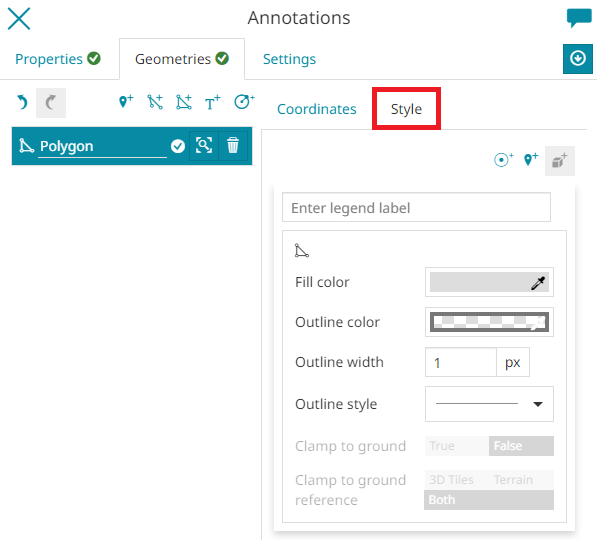
Note
For each style symbolizer there are many 3D style options available, as shown in the Styling on 3D section below.
Marker
MapStore provides different Marker annotation style:
- The Mark type: clicking on the button, the Mark symbolizer panel opens.
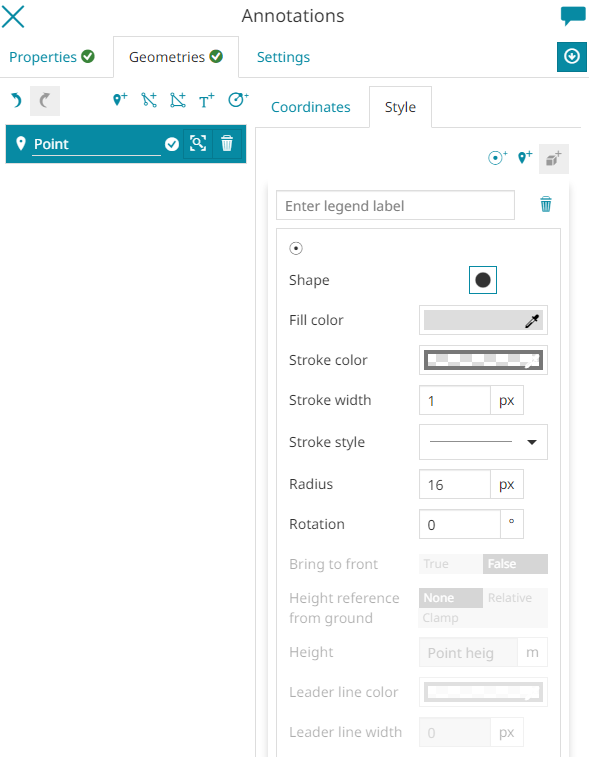
The Mark can have different Shape, Fill color and Stroke with different, Stroke color, Width, Stoke style and customizable Radius and Rotation. Take a look at the following example.
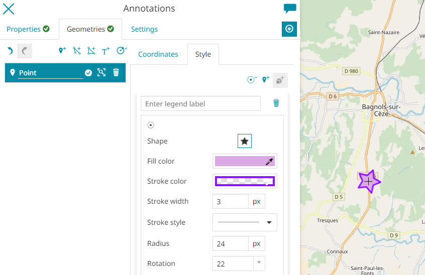
- The Icon type: clicking on the button, the Icon symbolizer panel opens.
The icon can have different
Image. Clicking on it, the user can choose a Marker and a Glyph, as follows:
The icon is also customizable with different Opacity, Size, Rotation and Anchor point.
Note
For Marker annotation, in 3D Navigation, the 3D model symbolizer type is also available, as shown in the Styling on 3D section below.
Line
The Line annotation has a dedicated styling panel with a customizable Stroke with different Color, Width and Style and different Line cap (Butt, Round, Square) and the Line join (Bevel, Round, Miter). Take a look at the following image.
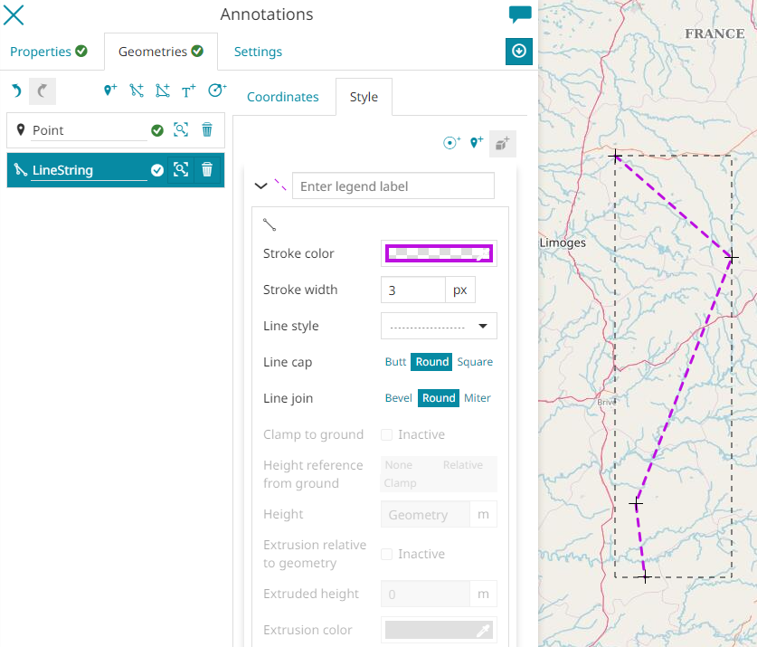
The line annotation is also customizable adding a Mark symbolizer by clicking on the button or the Icon one with the button and choose Start Point, Center or End Point from the Geometry transformation option.
Polygon
The Polygon annotation can have different Fill color and Outline with different Color, Width and Style. Take a look at the following example.
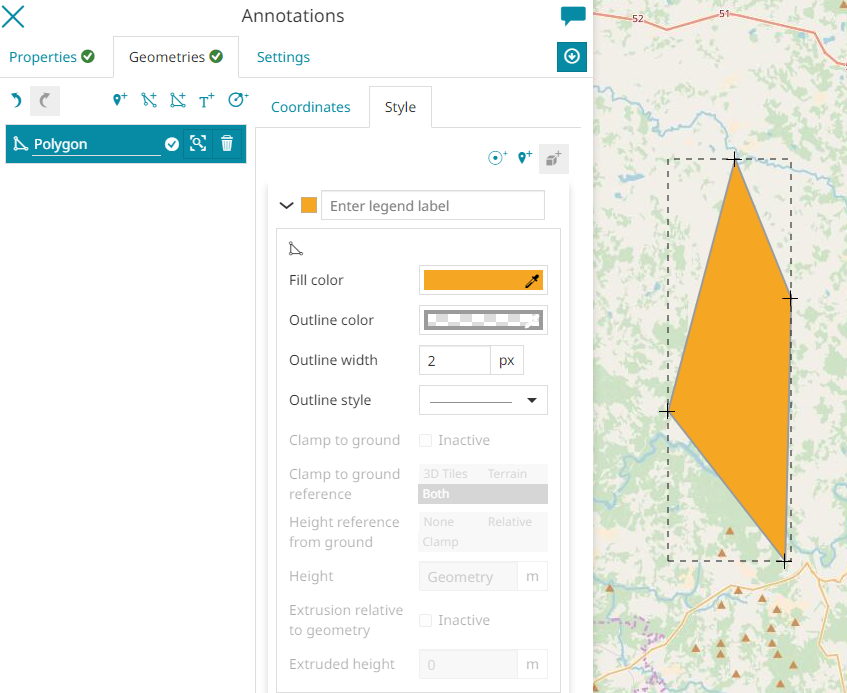
Also for the polygon itis possible to add a Mark or an Icon symbolizer in the same way as for Line annotations.
Text
Defining a point geometry with an associated text, the Text annotation allows to customize label trough many options such as: Font Family (DejaVu Sans, Serif, etc), the font Color, Size, Style (Normal or Italic) and Halo weight (Normal or Bold) and it allows also to select the desired Anchor point(Center, Bottom left, etc), Halo color and Halo weight. It is also possible to choose the text Rotation and Offset (x and y). En example can be the following one.
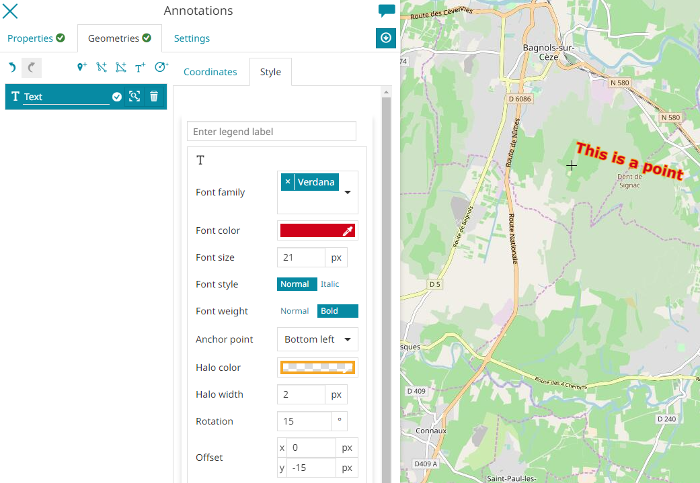
Circle
The Circle annotation has its own symbolizer panel to customize the Color and the Outline with different Color, Width and Style. Take a look at the following example.
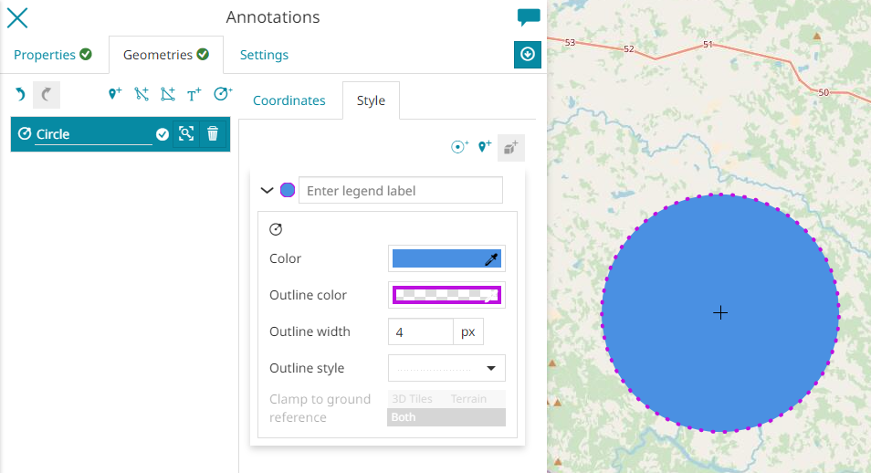
The Center of a Circle annotation can be also customized by adding a Mark or an Icon symbolizer in the same way as Line and polygon annotations.
Settings Annotations
Once all the annotation Geometries are created, the user can customize the usual Visibility limits by clicking on the Settings tab.
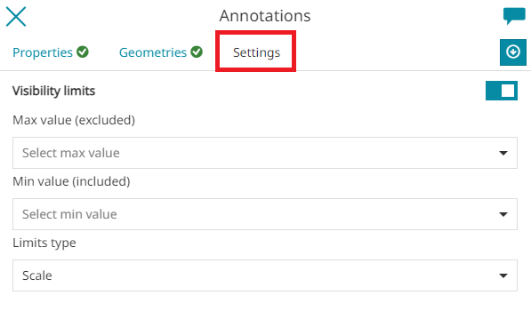
The Visibility limits allow the annotation to be displayed only within certain scale limits. The user can set the Max value and the Min value and select the Limits type choosing between Scale or Resolution.
Annotations on the 3D navigation
MapStore allows the visualization of the Annotations also for the 3D Navigation.
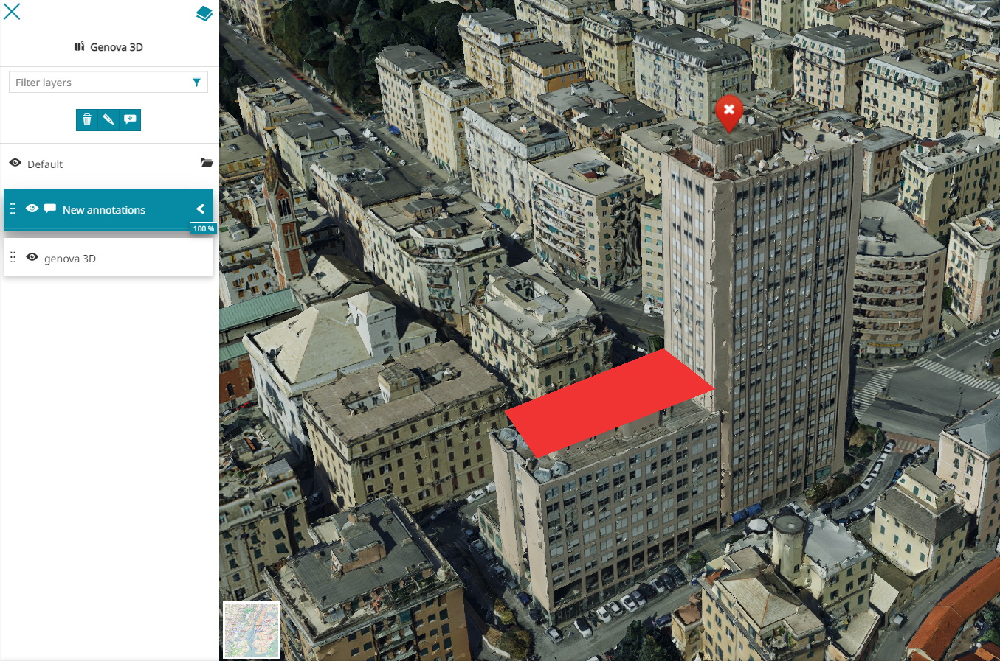
Geometries on 3D
On the 3D Navigation, after selecting a geometry type and drawing the geometry on the map, the user can also modify the geometry Height for each coordinate.
Styling on 3D
For Marker annotations, on the 3D Navigation the 3D model symbolizer type is also available.
From the Style tab, by clicking on button, the 3D model option opens to allow adding a 3D model (based on glTF, GLB is also allowed) as an external graphic by specifying its URL (see also the Cesium documentation). Furthermore, it is possible to customize the 3D model Scale, Rotation and Color. Take a look at the following example.
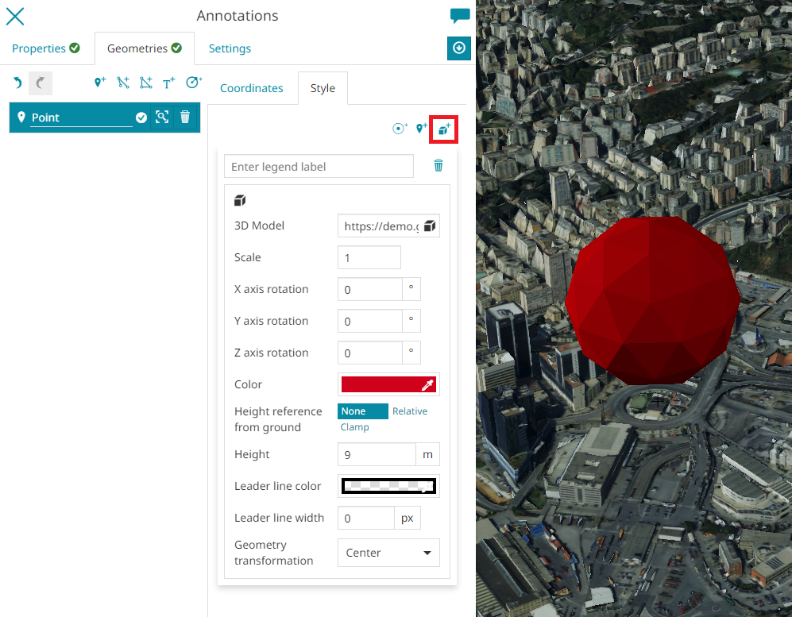
Furthermore, for the 3D Navigation, MapStore adds some additional styling options such as:
- Bring to front (available for Point and Text geometries) to bring in front and so to make visible (if set to true) the annotation covered by 3D Tile layers and the Terrain layer (for this last case when the depth test against terrain option is enabled in Global Settings).
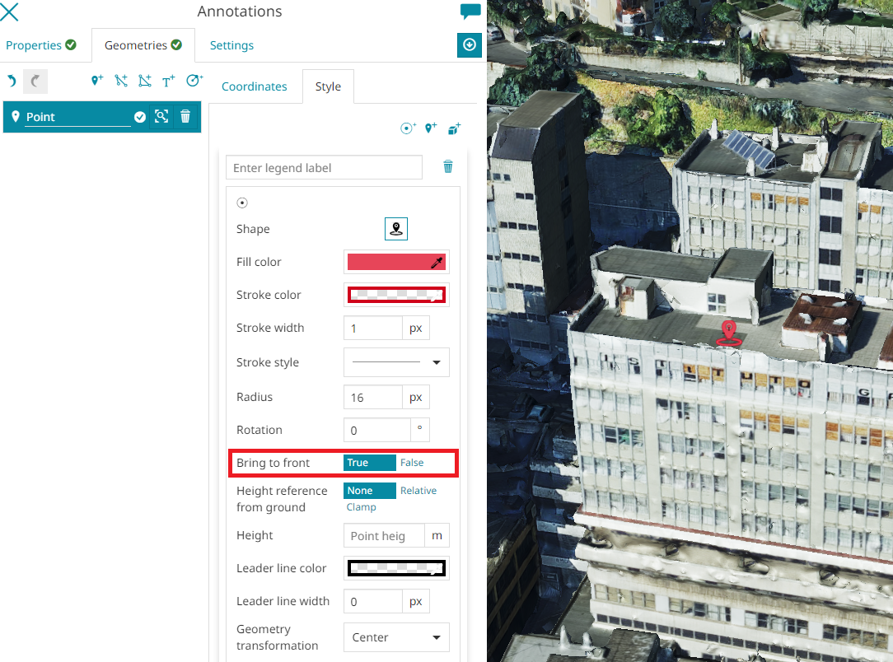
- Height reference from ground (available for Point and Text geometries) to indicate the reference for the point height between
None(to the absolute zero of the ground),Relative(to the terrain layer level) orClamp(the annotation is clamped to the Terrain, if present, or to the ground). It is also possible to finely configure the Height value of the point.
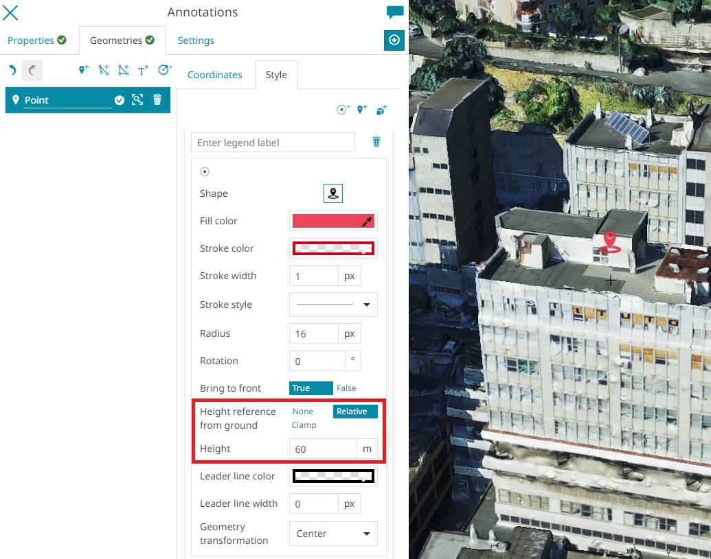
- Leader line (available for Point and Text geometries) to add a line to connect the point symbol with the Terrain/Ground to have a more clear reference of the effective point position when the camera orientation change. The editor can choose the Width of the line and the Color through the usual color picker.
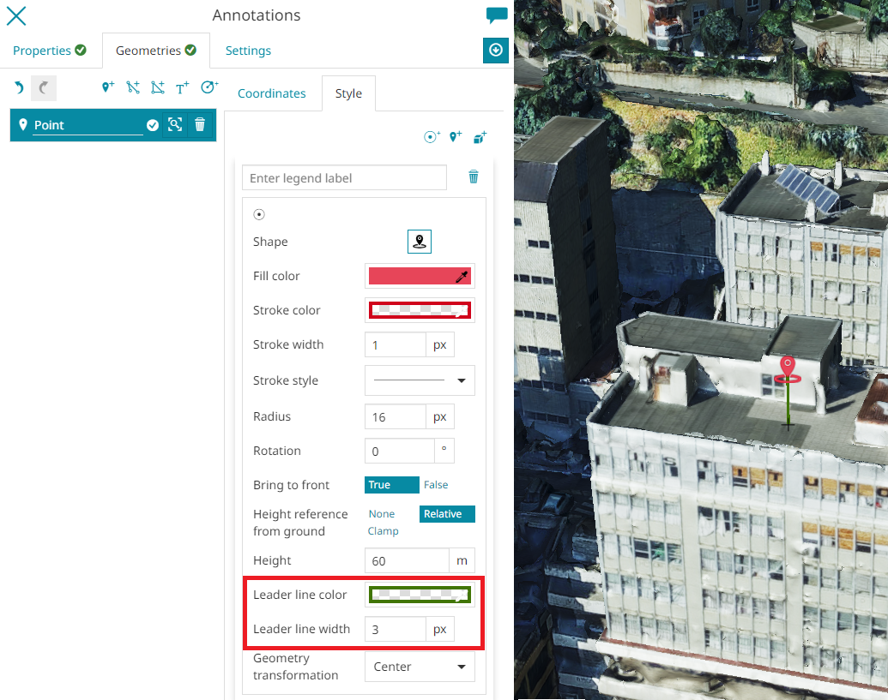
- Clamp to ground to enable/disable the boolean property specifying whether the line or polygon should be clamped to the ground (this option is available for Line and Polygon geometries).
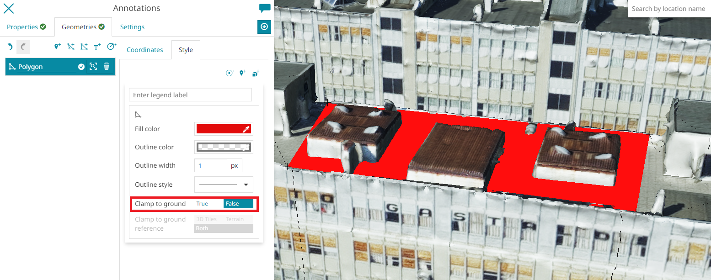
- Clamp to ground reference to choose whether the drape effect, should affect
3D Tiles,TerrainorBoth. This option is available for Line, Polygon and Circle geometries and it is only enabled when the Clamp to ground option is set toTrue.
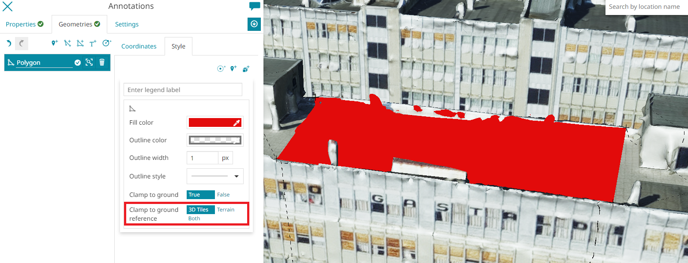
- Extrusion Height (available for Line and Fill geometries) to configure the height value of the feature to be extruded. It is also possible to enable/disable the Extrusion relative to geometry (from the highest point of the feature geometry) and, only for the Line geometries, the user can customize the Extrusion color and the Extrusion type, choosing between
Wall,CircleandSquareoptions, for the extruded features.
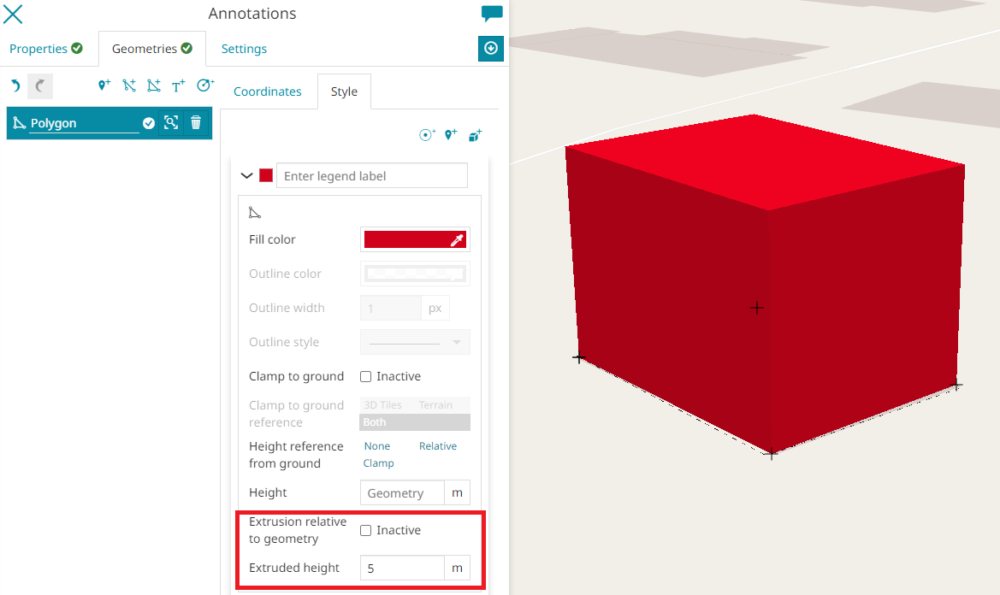